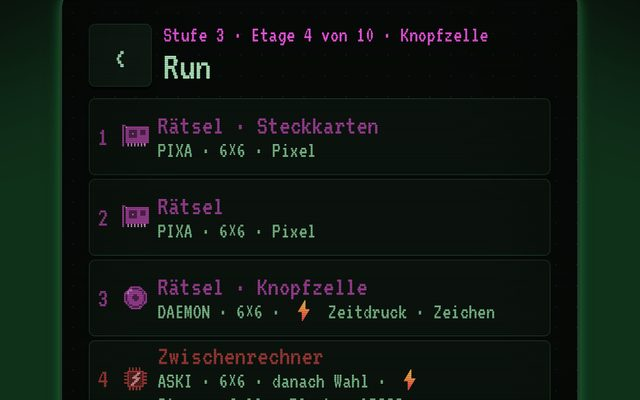
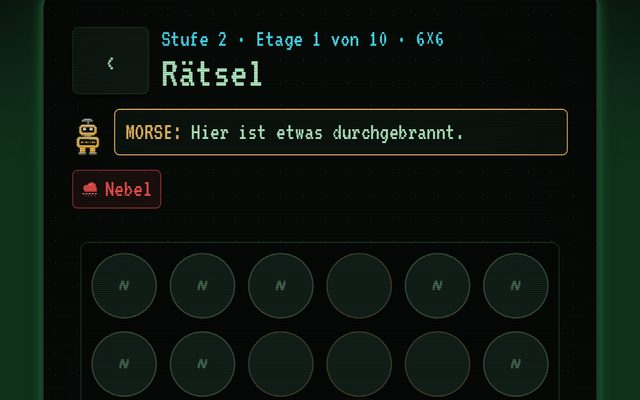
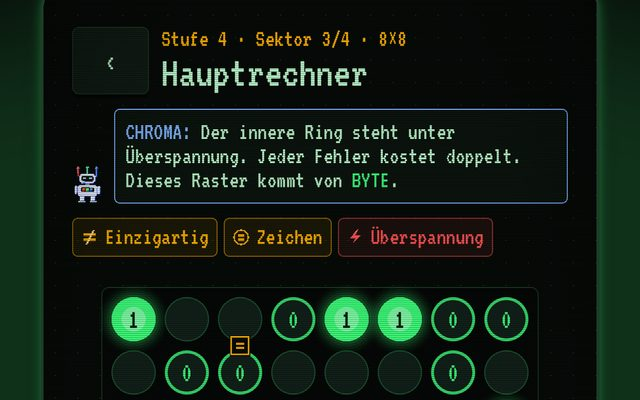

Archiv · Weltkarte · Prozessor
Bits & Bolts
Ein Roboter arbeitet sich durch zehn Stationen bis zum Hauptrechner und repariert unterwegs durchgebrannte Raster aus Nullen und Einsen. Jede falsche Ziffer ist ein Kurzschluss und kostet Ladung. Siege schalten neue Roboter und höhere Schwierigkeitsstufen frei.
Orte

Die Etagen
Station 1–10
Der Weg nach oben führt über zehn Stationen: sieben Rätsel und zwei Zwischenrechner an Station 4 und 7. In jedem Rätsel gelten drei Grundregeln: nur 0 und 1, nie drei gleiche nebeneinander, in jeder Zeile und Spalte gleich viele. Dazu bringt jeder Roboter eigene Hinweise mit.

Zwischenrechner
Station 4 und 7
Hier gelten verschärfte Bedingungen, ab Stufe 1 mit einem Ereignis wie Nebel, Zeitdruck oder falschen Vorgaben.

Hauptrechner
Ziel jedes Runs
Bis zu vier Sektoren: die äußeren Leitungen unter Spannung, ein Sektor mit Stromausfall, der innere Ring unter Überspannung und der Kern in 8×8. Nach jedem Sektor gibt es eine Ladung zurück.